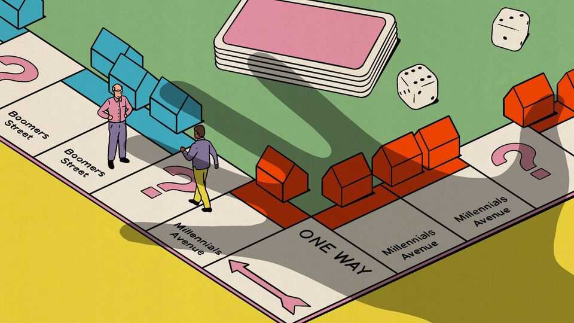
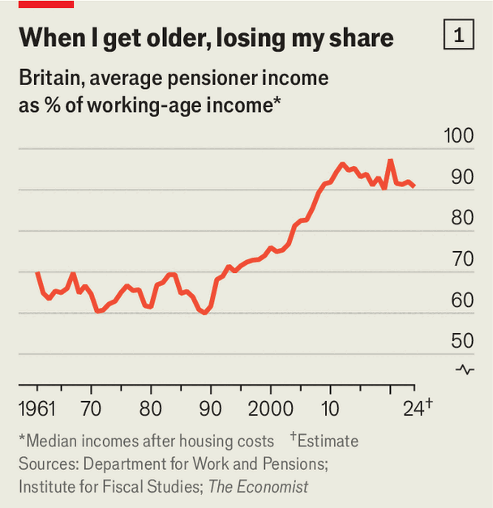
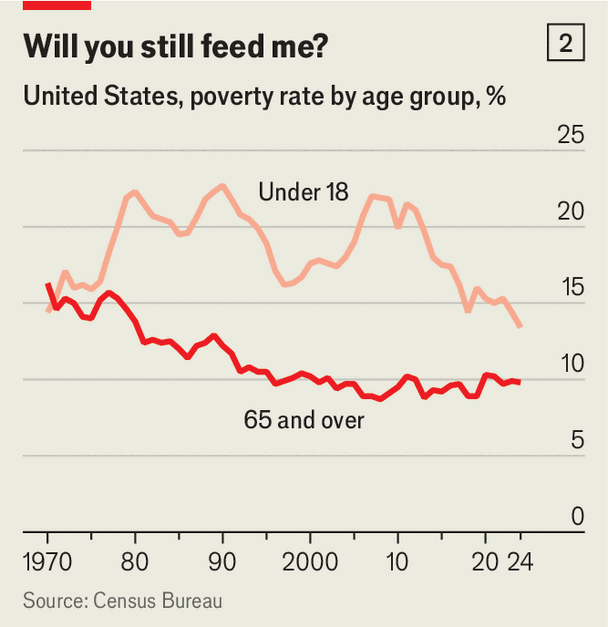
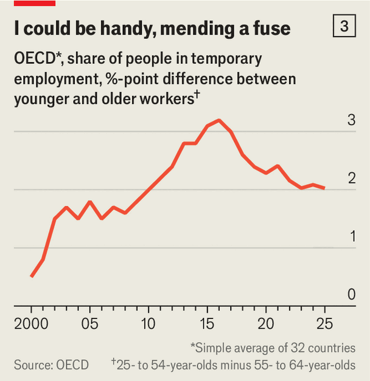
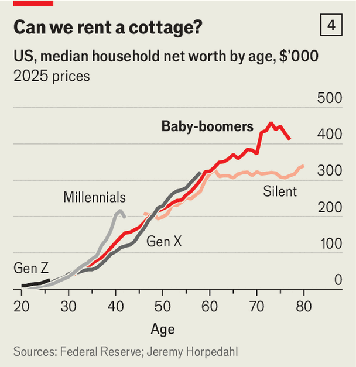
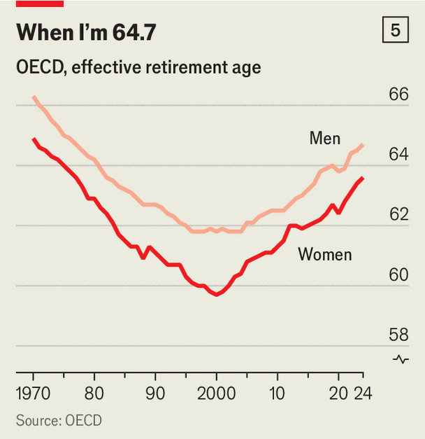

For boomers, economic boom times are over
Across the rich world, the geriatric share of income and wealth is ebbing

Nov 12th 2026
The riots in France gave another airing to a familiar grievance: that baby-boomers have cornered the market. After cushy careers, the gripe goes, people born between the mid-1940s and mid-1960s own all the best houses and most of the stock market, while receiving generous pensions to boot. Politicians, knowing that these oldies vote in large numbers, fall over themselves to hand them goodies. Younger adults are stuck with expensive housing, insecure work and a crumbling education system. In June Samuel Moyn of Yale University published a tome on the scourge, titled “Gerontocracy in America”.
Mr Moyn’s book and the sentiment it reflects may, however, be out of date. A range of data analysed by The Economist suggests that the world has passed peak boomer. Elderly incomes are falling relative to those of working-age people, the young are accumulating more wealth and governments are introducing more policies that benefit the stripling. The unwinding of boomer communism, as the phenomenon is less charitably described, is a ray of hope for indebted governments, which cannot afford to continue to lavish perks on an ageing population. It also suggests that Western political systems are less ossified than commonly assumed.
Boomer communism was the result of the postwar settlement. The welfare system of the 1950s and 1960s treated working men well but did far less for everyone else. Many older people, women in particular, made do with meagre occupational pensions and quickly outlived their savings. Old age was a synonym for destitution. In America in the mid-1960s close to 30% of people over the age of 65 had incomes below a threshold required to meet basic needs, compared with just 10% of working-age folk. In Canada in 1976 (the earliest available data) 47% of elderly households were poor (under a looser definition), versus 15% of 18- to 64-year-olds. Even when pensioners were not poor, they were rarely rich. In Britain in 1961 the income, after benefits, taxes and housing costs, of the median pensioner was 30% lower than that of the median person of working age.
By the 1980s poverty among the elderly became politically unsustainable. British newspapers were full of stories of pensioners “freezing to death”, for which they blamed stingy pensions. Scandals in nursing homes gripped America and France. Politicians who could safely ignore old people when there were few of them started paying attention as their ranks swelled. Strong economic growth at the time gave governments plenty of fiscal space for handouts to the old. They made pensions more generous and indexed them to wages or prices, expanded health care and added targeted help (for housing, heating, public transport and other amenities).

Britain, which has the best historical data, shows how things changed. In the 1990s and 2000s the incomes of pensioners soared. By the mid-2010s the retired had nearly as much coming in as working-age Britons (see chart 1). The trends were similar elsewhere. We estimate that the income of the median elderly household in America, after taxes and benefits, rose from 57% of that in other households in 1979 to 90% in 2012. From 2003 to 2019 the median disposable household incomes of elderly Italians, relative to those of working age, rose from 79% to 92%. By 2015 Greek pensioners had come close to out-earning younger compatriots. In many rich countries, the earnings of working people stagnated or fell, especially after the global financial crisis of 2007-09.
Governments’ big mistake was to help oldies who did not really need it. Plenty of boomers were already reaping the windfall of long bull markets in property and equities. This wealth was supplemented by income from generous defined-benefit pension schemes, which mostly tied payouts to final salaries. In addition, almost every country offers goodies to its elders that by any rational accounting it should not.
Most oldies get discounted or free admission to museums and art galleries. All Londoners aged 60 or over, from the poorest to the poshest, can ride many buses and the Tube free of charge. Spain subsidises pensioners’ holidays. Donald Trump’s big tax bill of 2025 gave taxpayers over 65 an additional $6,000 annual deduction.

Despite the aches and pains, in other words, being old can be pleasant. But maybe not for much longer. We found data on working-age and pensioner incomes for 32 rich countries. In 26 of them the elderly are declining relative to the young. Working-age Greeks now earn nearly 20% more than pensioners receive. Had British oldies’ progress of the early 1990s to the mid-2010s continued, their incomes would be 10% above the working-age median. In fact they are 10% below it. The median incomes of America’s elderly have not gained on the non-elderly for over a decade. Child poverty has fallen sharply in recent years, and now is only a bit higher than elderly poverty (see chart 2). Even in Brazil, where the median older household once got 20% more than working households, things are coming back into balance.
Younger people are not just earning more. Many have also found better-quality work. Economists have long argued that European job markets are subject to “insider-outsider” dynamics, in which old people sit in well-paid and protected roles while younger ones suffer on insecure, temporary contracts.

One way to quantify insider-outsider dynamics is to compare how common temporary work is among different cohorts. In much of the 2000s and 2010s younger workers in OECD economies were becoming relatively likelier to fill temporary roles, suggesting that insider-outsider dynamics were intensifying in the club of mostly rich countries (see chart 3). More recently, though, the gap has narrowed.
Americans over 70, who make up 13% of the population, do hold a huge share of their country’s overall private wealth—about a third, according to the Federal Reserve. But since the late 2010s their share of wealth has grown more slowly than their share of the population. Young people, many of whom have bought into the stock market, are doing surprisingly well. American millennials (born between the early 1980s and the mid-1990s) may mope about their lot but they are richer than any earlier generation at their age. Early signs provide some indication that Gen-Zers are accumulating wealth even faster (see chart 4).

The elderly’s dominance of the housing market is also not what it used to be. In the decade to 2019 the median age of American homeowners rose from 54 to 58. But since then it has not budged—even as the population has aged. In England, which has less precise data, the share of homeowners aged 65 and over has been flat at about 36% since 2017-18. This implies that younger people are finding it easier to get on the “housing ladder”.
Economic gerontocracy has peaked for a few reasons. One relates to the economy. Excluding the short downturn of 2020, amid the covid-19 pandemic, the rich world has not experienced a synchronised recession for two decades. Strong demand for labour has boosted workers’ wages, which in turn has made it easier for them to accumulate wealth. Post-covid inflation, meanwhile, probably hit old people harder than youngsters. Wages have kept up reasonably well with rising prices, whereas many defined-benefit pensions pay a fixed nominal amount. Inflation has also eaten up the savings on which many oldies live. A paper published by the European Commission found that the recent “cost-of-living crisis” hit pension-age households nearly three times as hard as those of working age.
These relative gains in favour of the young would have occurred even if politicians kept their pro-oldie bias. In fact, policy is also turning less boomer-friendly. Over the past decade many European governments have liberalised labour markets. This benefits younger workers (since firms are more willing to take a chance on a fresh hire if they can sack people more readily) at the expense of the old (who are now easier to get rid of). Quantitative indicators produced by the OECD suggest that in recent years employment-protection rules in Greece and Italy have become less strict. France has made firings more predictable for employers, including by capping compensation for unfair dismissal.
The clearest shift away from gerontocracy may be in public spending. Wonks at the University of Pennsylvania allocate federal spending in America to different age groups. Using their methodology, we estimate that until the 2010s Americans over 65 received ten times as much federal money per person as other age groups did. Outlays on Social Security and Medicare, the health-care programme for the elderly, vastly outweighed spending on child benefits (lots of education spending is within the purview of states and cities rather than the federal government).
Pots of money continue to flow to the elderly. But because so many people are ageing so fast, individual oldsters are losing out. By 2024 the American old were getting six times as much government largesse as younger cohorts rather than ten times. In the majority of the other 29 rich countries we examine, we find similar trends. In Italy old-age spending has gone from almost 15 times as much as spending on families and children before the pandemic to less than ten times as much.
Some of the narrowing of the largesse gap has to do with how much governments are splurging on the old. Many have put a lid on health-care spending, which disproportionately flows to the elderly. After soaring during the 2000s, American health spending has been roughly flat as a share of the economy. Many other countries in the OECD have also bent the health-care curve, thanks to expanded use of cheap generics, stingier payments to health-care providers and other cost control.

Public pensions are changing, too. Reforms in the 1990s had, bizarrely given ageing populations, reduced the average age at which people in the OECD retired, from about 65 to 61 (see chart 5). Pension systems thus had to support old folk for longer. Now governments are encouraging people to stay in work. In the past decade the average age at which an Italian man retires has increased by four years. Even in France, which has one of the world’s most generous pension systems, the age at which people hang up their boots is rising.
A new database of pension reforms, maintained by the IMF, suggests that after years of giveaways, policies are becoming somewhat more hardnosed. Britain’s prime minister, Andy Burnham, recently said that his government would reform the “triple lock” on the state pension that raises it by inflation, earnings growth or 2.5%, whichever is highest. In 2025 China, where most men retired at 60 and women in blue-collar jobs could do so as young as 50, began implementing its first increase in the retirement age in over 70 years (to 63 for men and 55-58 for women by 2040).
Even as they have tried to contain spending on the old, governments have become less stingy with the young. Many have increased handouts to families, often in an attempt to boost fertility rates. Since 2024 Germany, Ireland, Japan, Poland and South Korea have introduced or expanded child allowances. Parental leave has grown more generous, too. Uncle Sam is chipping in $1,000 to seed investment accounts for children born in 2025-28. Whether or not such policies meaningfully boost birth rates (and economists are sceptical), they certainly increase the incomes of young parents and their existing offspring.
Perhaps some regression towards youth was inevitable after decades when everything seemed to go oldies’ way. Daniel Stockemer and Kamila Kolodziejczyk of the University of Ottawa and Aksel Sundström of the University of Gothenburg manage a data set which tracks the ages of political cabinets across the world. Our analysis of their data suggests that in the 2000s and 2010s, old people were increasingly overrepresented. More recently, however, this trend appears to be turning.
In America’s House of Representatives the average age at the start of the current Congress in 2025 was 57.9 years, down from 58.4 in early 2021. It may be younger still next January, given the results of the midterm elections on November 3rd. The Senate will certainly get less geriatric: newly minted senators are nearly 15 years younger than the incumbents they replace. In Britain the average age of MPs elected in 2024 was 49, down from 51 five years earlier. In recent years the share of French ministers who are 40 or under has jumped from about one in ten to one in four. President Emmanuel Macron is 48, and first took office at the age of 39.
Policy almost everywhere remains biased towards pensioners. The old hold a formidable stock of property and financial assets, and the coming pressure on health and long-term care will be severe. But for the first time in decades, governments are beginning to recognise that they do not exist to serve the needs of a single constituency. Slow growth and high public debt make it impossible to increase pensions indefinitely. Low fertility makes the cost of excluding parents from work more obvious. And to the extent that politicians look out for their own kind, these shifts may continue. The golden age of the golden oldie may be nearing its end. ■